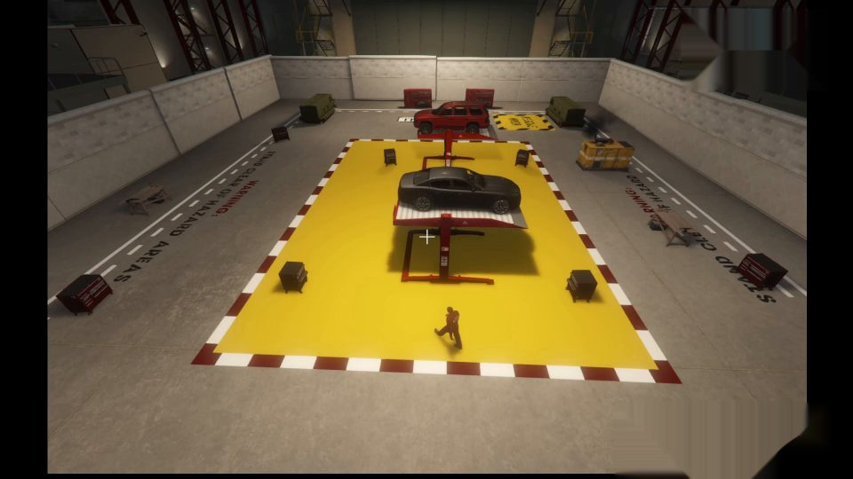
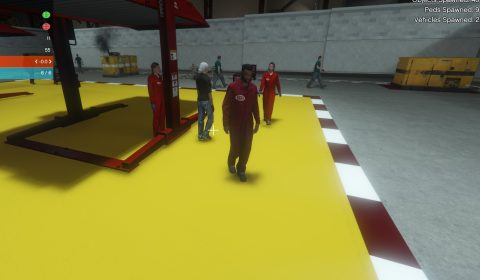
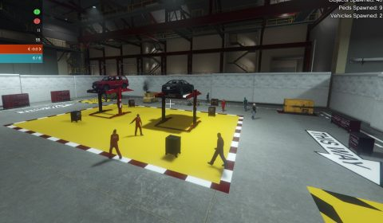
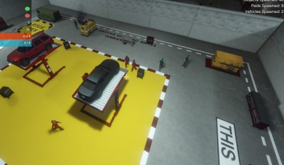
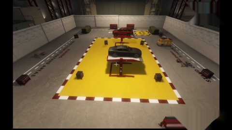
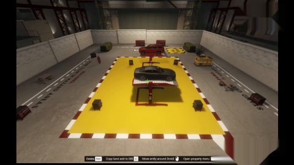
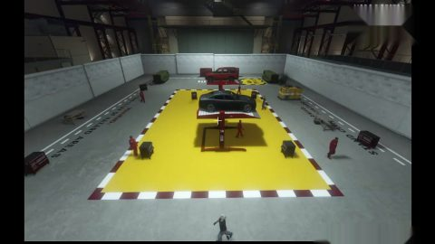

An overalls detector for the Safety Monitor
Juan B. Medina · Module coordinator: Dr David Garzón Ramos
School of Mechanical and Materials Engineering · University College Dublin




The yellow zone holds two car lifts.
Only the mechanics in red overalls may enter it.
Several cameras watch the floor. Light changes from one camera to the next.
For every frame, the monitor must answer
1. Where is each person?
2. Does that person wear the overalls?
Where is each person?
A general question. Every camera system in the world asks it.
detector
YOLOv8, pretrained on 80 kinds of objects.
Trained by its authors. You reuse it, as you reused the language model in Practical 4.
Does this person wear the overalls?
A question specific to this workshop. No pretrained model knows the answer.
classifier
Section 1: a mask you calibrate by hand.
Section 2: a model you train on 250 crops.
Trained by you, today.
Reuse the large general part. Train only the small specific part.
This split is the main design idea of the Safety Monitor. Many engineering applications follow the same pattern. A big pretrained model answers the general question. A small model, trained on your own data, answers the specific one."You Only Look Once." One pass of the network, every box at once.
Each box carries three things. The four corners, the name of the object, and a confidence from 0 to 1.
Pretrained on 80 everyday classes. It names only what it has seen.
The Safety Monitor keeps one class, person, and ignores the rest.
The detector finds people. It does not know what overalls are.
Therefore, a second step looks inside each box.
In the demonstration, the classifier is a mask. In the practice, it is the model you train.
Four crops of the dataset, four cameras. Each crop goes to HSV. The mask keeps the pixels inside the range and counts them.
Step 3 is the mask in the demonstration and your model in the practice. Steps 1 and 2 do not change.
Three stages, one real frame of multiple_workers.mp4. The frame arrives. YOLO returns one box per person, with its confidence. The classifier of the demonstration, the mask with its default range, colours each box green or red. Look at the workers that get a red box. The mask misses them under this light, and a red box inside the zone raises a false alert. In the practice you replace only the third stage.gradio.live link.workshop_walk.mp4, extract the first frame, mark the zone.multiple_workers.mp4, another camera.The three videos are on the practical page, under Section 1. Write down your best calibration. You will compare it with your model at the end.



You chose 4 numbers with the sliders.
The computer only counted pixels.
You give 250 labelled crops.
The computer adjusts its 369 numbers until the crops separate.
Same workflow. Only step 3 changes. That is training.
Left, your hand on four sliders. Right, sixteen of the 250 training crops with the label a person gave them. The model sees only crops like these and their labels. It adjusts its 369 numbers, and the accuracy climbs from chance, 0.5, towards the target.One number per pixel and per colour channel. 0 is dark, 255 is bright.
The model never sees a picture. It sees these numbers.
crop.shape
(3, 64, 64)
3 channels, red, green and blue · 64 rows · 64 columns
PyTorch puts the channels first. The crops of today are 64 × 64.
At each position, multiply the 9 numbers under the window by the 9 numbers of the kernel and add them up. One number out.
Nobody writes the kernel. Training adjusts its 9 numbers. A layer with 4 kernels gives 4 feature maps.
nn.Conv2d(3, 4, kernel_size=3, padding=1)
3 channels arrive · 4 kernels, so 4 maps leave · 3 × 3 window · padding=1 keeps the map at 64 × 64
nn.ReLU()
Every negative number becomes 0. Without it, a stack of convolutions collapses into one big convolution.
nn.MaxPool2d(2) # 64 × 64 → 32 × 32 nn.MaxPool2d(8) # 64 × 64 → 8 × 8
Keeps the strongest response of each square and forgets its exact position. The overalls can be anywhere in the crop.
4 maps of 8 × 8 become one row of 256 numbers
nn.Flatten() nn.Linear(256, 1)
256 weights and 1 bias. Multiply, add, one score.
This is the neuron of Practical 2, with 256 inputs instead of 4.
The sigmoid maps the score to a confidence between 0 and 1. Above 0.5 counts as overalls.
model = nn.Sequential( nn.Conv2d(3, 4, kernel_size=3, padding=1), nn.ReLU(), nn.MaxPool2d(8), nn.Flatten(), nn.Linear(256, 1), )
Five layers, one after the other. Each layer receives what the layer before it produces.
show_architecture(model) draws this chain for any model you write, with the shape after each layer.
The loss measures how far the confidences are from the labels. A random model scores about 0.69.
Each step moves every parameter a little in the direction that lowers the loss. The learning rate sets the size of the step.
run_experiment(
"first model", model,
epochs=5, learning_rate=0.001,
batch_size=32, seed=0)
epochs passes over the 250 crops · learning_rate step size · batch_size crops per step · seed the random start
Fewest parameters wins. A good run also works with seed=1.
Part 4: plug your best model into the Safety Monitor and run the three videos.
Practical guide and notebooks
Open the notebook of the practice from the page. Save a copy to Drive first.